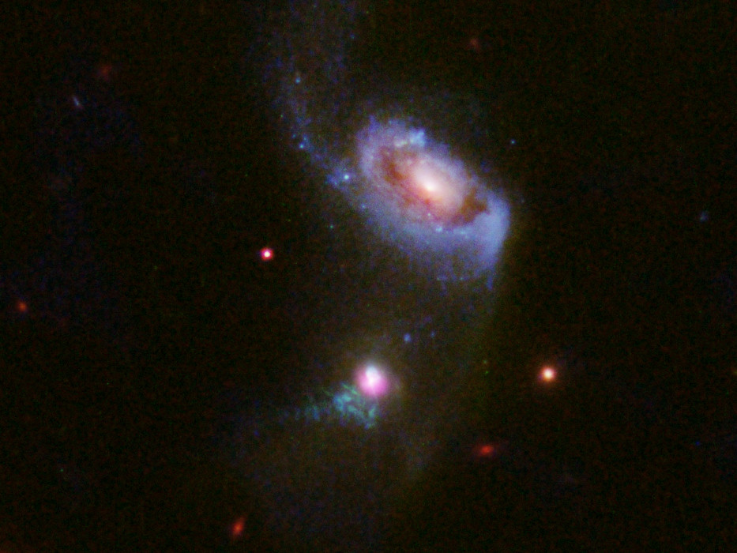

Black Holes: A Comprehensive Study of Their Formation, Physics, and Cosmic Role
Introduction
Black holes are some of the most intriguing and extreme objects in the universe, fascinating scientists and the public alike. Their defining feature is an incredibly strong gravitational field from which nothing, not even light, can escape once it crosses a threshold known as the event horizon. This intense gravitational force results from the collapse of massive stars under their own weight, which leads to a point of infinite density at the center—called the singularity. Black holes challenge our understanding of physics, acting as laboratories for testing extreme conditions, including gravity and quantum mechanics. While they might seem like cosmic oddities, black holes influence the formation of galaxies, the behavior of stars, and the structure of spacetime, playing a crucial role in shaping the universe as we know it.

Several tens of shots of SgrA* show its large temporal variability, to the point that the reconstruction of an averaged image cannot accurately reproduce the state of the accretion stream (uncertain position of the overbrightness).
Formation of Black Holes
Stellar Collapse:The primary mechanism for the creation of black holes is the collapse of massive stars. Stars that are at least 20 times the mass of the Sun can end their lives in a dramatic event. When these stars exhaust their nuclear fuel, they lose the ability to sustain the outward pressure caused by nuclear fusion. As a result, the star collapses under its own gravity, and the core compresses to an extremely dense state. If the core’s mass exceeds the Tolman–Oppenheimer–Volkoff limit (around 2-3 solar masses), no known force can counteract this collapse, resulting in the formation of a black hole.
Supernovae and Direct Collapse:Typically, when a massive star collapses, it triggers a supernova, an explosion that ejects the outer layers of the star. However, in some extreme cases, especially with very massive stars, the collapse does not involve a supernova explosion. Instead, the star may directly collapse into a black hole without the violent outburst. This direct collapse scenario is still under investigation, and understanding it could help uncover the true nature of black hole formation, especially in the early universe.
Merging Neutron Stars:Neutron stars, which are the remnants of stars that have gone supernova, are another pathway for black hole formation. When two neutron stars are part of a binary system, their gravitational attraction causes them to spiral inward over time. Eventually, they may collide and merge. If the mass of the resulting object exceeds the neutron star limit (around 2-3 solar masses), the collapse of the merged object results in the formation of a black hole. These mergers have been observed in gravitational waves, providing strong evidence for this process.
Types of Black Holes
Stellar-Mass Black Holes:These black holes, which have masses ranging from about 3 to 20 times that of the Sun, are typically the remnants of massive stars that have undergone supernova explosions. They are the most commonly observed type of black hole and are often found in binary star systems, where the gravitational influence of the black hole can be detected through its effect on the orbit of its companion star. Their relatively small mass compared to other black holes makes them difficult to detect unless they are part of an interacting system.
Intermediate-Mass Black Holes:These black holes are theorized to have masses between 100 and 1000 times that of the Sun. The formation of these black holes is still under investigation, and there are multiple potential formation mechanisms. One possibility is that they form through the merger of stellar-mass black holes. Another hypothesis suggests that they could emerge from the collapse of dense star clusters. Intermediate-mass black holes have been observed indirectly through the gravitational effects they have on nearby objects, but direct evidence is still limited.
Supermassive Black Holes:Supermassive black holes are found at the centers of most galaxies, including our own Milky Way. These black holes can have masses ranging from millions to billions of solar masses. Their exact formation mechanisms are still debated, but there are several competing theories. One idea is that supermassive black holes formed from the merging of smaller black holes or massive gas clouds in the early universe. Another theory posits that they might have grown from stellar-mass black holes through continuous accretion of surrounding matter over billions of years. Their gravitational pull is so strong that they significantly influence the dynamics of galaxies, often dictating the rate of star formation and the motion of stars in the galactic core.
Primordial Black Holes (Speculative but Supported):Primordial black holes are a theoretical class of black holes that could have formed in the early universe, shortly after the Big Bang. Unlike black holes that form from stellar collapse, primordial black holes would have originated from density fluctuations in the very early stages of the universe, when conditions were extreme and the universe was much smaller. These black holes could vary in size from very small (much smaller than stellar-mass black holes) to large, potentially contributing to the mysterious nature of dark matter. While primordial black holes have not been observed directly, they remain an active area of research in cosmology.
![This is a Hubble image of a black sky sprinkled with myriad galaxies of all shapes and sizes stretching back to nearly the beginning of the Universe. In the middle of the picture there is an inset box showing one sample pair of early galaxies. One galaxy is spiral-shaped and the other is spindle-shaped because it is a disc galaxy seen edge-on. The spindle-shaped galaxy has an active supermassive black hole that appears as a bright white spot. This is identified by comparing pictures of the same region taken at different epochs.](./images/blackhole.jpg)
This is a Hubble image of a black sky sprinkled with myriad galaxies of all shapes and sizes stretching back to nearly the beginning of the Universe. In the middle of the picture there is an inset box showing one sample pair of early galaxies. One galaxy is spiral-shaped and the other is spindle-shaped because it is a disc galaxy seen edge-on. The spindle-shaped galaxy has an active supermassive black hole that appears as a bright white spot. This is identified by comparing pictures of the same region taken at different epochs.
Anatomy of a Black Hole
Event Horizon:
The event horizon is the point of no return for a black hole. Once an object crosses this boundary, the gravitational pull is so intense that not even light can escape. This means the black hole becomes invisible beyond this threshold, and it is impossible to detect objects within. However, the event horizon is not a physical surface; rather, it represents a boundary in spacetime. The radius of the event horizon is referred to as the Schwarzschild radius and is proportional to the mass of the black hole.
Singularity:
At the core of a black hole lies the singularity, where the laws of physics as we know them break down. This point, characterized by infinite density and curvature of spacetime, marks a boundary beyond which current physics cannot describe what happens. It is a region where gravitational forces become infinitely strong, and time and space lose their usual meaning. The singularity represents a challenge to our understanding of gravity, and scientists are still working on theories to describe its behavior, often in the context of quantum gravity.
Accretion Disk:
The accretion disk is a rotating disk of gas, dust, and other matter that forms around a black hole as it pulls in surrounding material. As matter spirals toward the black hole, it heats up due to friction and intense gravitational forces, emitting X-rays and other forms of radiation. This disk is not static but exhibits dynamic behavior, with matter moving at relativistic speeds. The study of accretion disks provides crucial information about the mass, spin, and dynamics of black holes. It also offers a way to observe black holes indirectly, since the disk emits radiation that can be detected by telescopes.
Photon Sphere:
The photon sphere is a region just outside the event horizon where light can orbit the black hole due to its intense gravitational field. This occurs at a specific distance from the black hole, depending on its mass. The photon sphere is unstable, meaning that light can only orbit there for a brief moment before being either pulled into the black hole or escaping. This effect is crucial for phenomena like gravitational lensing, where light from background objects is bent by the black hole’s gravity, creating visual distortions that can be observed by astronomers.
Ergosphere (Rotating Black Holes):
In rotating black holes, known as Kerr black holes, the ergosphere is a region outside the event horizon where spacetime is dragged around by the black hole's rotation. This effect, known as "frame dragging," means that no object can remain stationary within the ergosphere. Objects within this region can still escape the black hole’s gravitational pull, but only if they are moving in the direction of the rotation. The ergosphere is an important concept for understanding processes like the Penrose process, where energy is extracted from a rotating black hole.
How We Detect Black Holes
Gravitational Effects:
Black holes can be detected indirectly by observing the gravitational effects they have on nearby stars or gas. For instance, if a star orbits an invisible companion, the presence of a black hole may be inferred from the star's motion and the mass required to exert such gravitational influence.
Accretion Disks:
As matter falls into a black hole, it forms an accretion disk, which emits high-energy radiation, particularly X-rays. Telescopes that can detect X-rays, such as the Chandra X-ray Observatory, allow astronomers to study the behavior of matter in the extreme conditions near black holes.
Gravitational Waves:
The collision and merging of black holes produce gravitational waves—ripples in spacetime that can be detected by observatories like LIGO and Virgo. The detection of these waves has provided direct evidence of black hole mergers and has opened up a new field of gravitational wave astronomy.
Direct Imaging:
The Event Horizon Telescope (EHT) made history by capturing the first image of a black hole's event horizon in the galaxy M87 in 2019. This achievement involved a global network of radio telescopes working together, showcasing the shadow of the black hole against the bright backdrop of the surrounding accretion disk.

Researchers using a suite of telescopes including the NASA/ESA Hubble Space Telescope have spotted a supermassive black hole blowing huge bubbles of hot, bright gas — one bubble is currently expanding outwards from the black hole, while another older bubble slowly fades away. This cosmic behemoth sits within the galaxy at the bottom of this image, which lies 900 million light-years from Earth and is known as SDSS J1354+1327. The upper, larger, galaxy is known as SDSS J1354+1328.
Notable Black Holes
Cygnus X-1:
Discovered in the 1960s, Cygnus X-1 is one of the first black hole candidates identified. It is a stellar-mass black hole in a binary system with a companion star, emitting strong X-rays as material is accreted from the companion star.
Sagittarius A\(Milky Way’s Center):
Sagittarius A* is the supermassive black hole at the center of our galaxy, with a mass of about 4.1 million solar masses. Observations of stars orbiting this black hole have provided strong evidence for its existence and have helped us understand the dynamics of our galactic center.
M87\(Messier 87):
M87* is the supermassive black hole at the center of the giant elliptical galaxy M87. It gained international attention when the EHT captured its first image, providing direct visual evidence of a black hole and offering insights into how black holes can influence their surroundings.

A supermassive black hole at the center of a galaxy known as NGC 5548 peeping out over the edge of a swirling dusty disc. Here all kinds of material - dust, gas, and even stars - are steadily falling into the violent black hole, thereby creating a blaze of energetic ultraviolet light
Physics of Black Holes
Schwarzschild Radius:
The Schwarzschild radius defines the size of the event horizon for a non-rotating black hole. It can be calculated using the formula:
\[
R_s = \frac{2GM}{c^2}
\]
where \( G \) is the gravitational constant, \( M \) is the mass of the black hole, and \( c \) is the speed of light. This radius helps us understand the scale of black holes in terms of their mass.
Kerr Black Holes:
Kerr black holes are rotating black holes that have angular momentum. They differ from Schwarzschild black holes by having an ergosphere, where the effects of rotation allow for unique phenomena, such as frame dragging, which affects the motion of objects and light near the black hole.
No-Hair Theorem:
The no-hair theorem posits that black holes can be completely described by just three parameters: mass, charge, and spin. This simplification implies that all other information about the matter that formed or fell into the black hole is lost, leading to profound implications for theories of information and entropy in black hole physics.
Hawking Radiation
Black Hole Thermodynamics:
Hawking radiation is a theoretical prediction made by physicist Stephen Hawking, which suggests that black holes can emit radiation due to quantum effects near the event horizon. In this process, particle-antiparticle pairs spontaneously form near the event horizon. One particle falls into the black hole while the other escapes, leading to a gradual loss of mass and energy by the black hole. This process could eventually cause black holes to evaporate over extremely long timescales.
Evaporation:
Over timescales much longer than the age of the universe, black holes could theoretically evaporate entirely due to the emission of Hawking radiation. This raises profound questions about the ultimate fate of the information that has fallen into the black hole. The “information paradox” concerns the idea that information about the matter swallowed by a black hole could be lost, violating the principle of quantum mechanics that information should be conserved.
Black Holes and the Cosmos
Galactic Centers:
Supermassive black holes are found at the centers of most galaxies, and their influence is crucial for understanding galaxy formation and evolution. They regulate the rate of star formation, control the movement of stars in the galactic core, and may be responsible for large-scale galactic phenomena, such as the formation of active galactic nuclei and quasars.
Mergers and Growth:
Black holes can grow by accreting surrounding matter or through mergers with other black holes. These processes are integral to the evolution of galaxies and the formation of larger structures in the universe. The detection of gravitational waves from black hole mergers has revealed that these events are common and play an important role in shaping the properties of the universe.
Misconceptions About Black Holes
"Black Holes Suck Everything In":
Contrary to popular belief, black holes do not suck everything in indiscriminately. They only exert a strong gravitational pull on objects that come too close, such as stars or gas in their vicinity. If an object is far enough away from the black hole, it can orbit safely without being pulled in.
They Can Destroy the Universe:
Black holes do not have the ability to destroy the universe. While their gravitational fields are intense, their influence is limited to their immediate surroundings. The universe, on the whole, is not in danger from black holes.
All Black Holes Are the Same:
Black holes come in various types, each with distinct characteristics. They differ in mass, formation processes, and behavior, highlighting the complexity of these cosmic objects.
Conclusion:
Black holes are fundamental to our understanding of the universe. They challenge our perceptions of space, time, and gravity, and continue to inspire groundbreaking research in both theoretical and observational physics. As we continue to observe and study these enigmatic objects, black holes remain a crucial area of exploration in astrophysics, helping us unlock the mysteries of the cosmos.
References:
1. Hawking, S. W. (1974). "Black Hole Explosions?" Nature, 248(5443), 30-31.
2. LIGO Scientific Collaboration. (2016). "Observation of Gravitational Waves from a Binary Black Hole Merger." Physical Review Letters, 116(6), 061102.
3. Event Horizon Telescope Collaboration. (2019). "First M87 Event Horizon Telescope Results. I. The Shadow of a Supermassive Black Hole." The Astrophysical Journal Letters, 875(1), L1.
4. Kormendy, J., & Ho, L. C. (2013). "Coevolution (or not) of Supermassive Black Holes and Their Host Galaxies." Annual Review of Astronomy and Astrophysics, 51(1), 511-653.
5. Penrose, R. (1965). "Gravitational Collapse and Space-Time Singularities." Physical Review Letters, 14(3), 57-59.